официальный сайт слайдера
Как обычно два пути подключения: CDN или качать библиотеки
Архив с библиотеками для локальной установки
пример разметки:
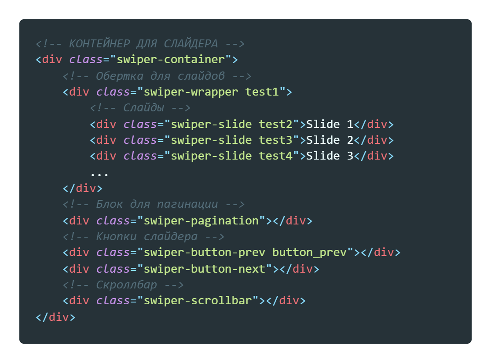Классу swiper-container задаем размеры высоты и ширины, какие размеры укажем это и будут размеры нашего слайдера
В файле JS прописываем инициализацию вот таким образом
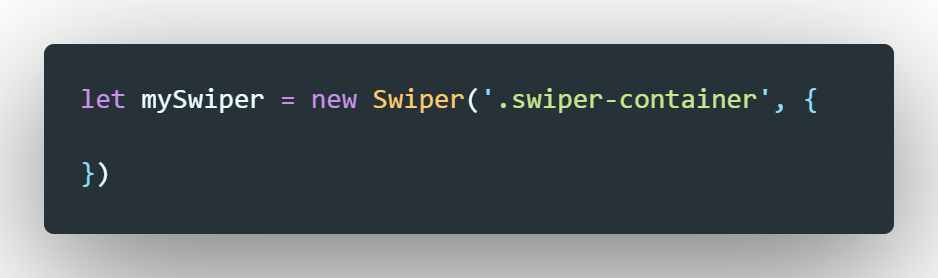Для того что бы запретить свайпать слайдер, нужно элементу который является слайдером добавить еще один класс - swiper-no-swiping
пример
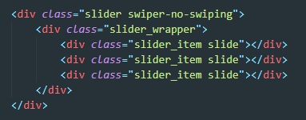slidesPerView - количество отображаемых слайдов (числовое значение)
width - задает ширину слайда (по умолчанию высчитывается из 100%)
spaceBetween - расстояние бежду слайдами в пикселях (числовое значение)
loop - петля (true или false)
pagination - добавляет пагинацию для слайдера
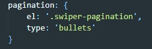в качестве el мы передаем класс блока в который мы помещаем пагинацию
В type мы передали значение bullets - что означает что пагинация будет в виде точек. Так же можно указать fraction - то в качестве пагинации будут цифры
Пагинацию мы можем стилизовать, для этого просто добавляем стили для классов swiper-pagination-bullet и swiper-pagination-bullet-active
Так же если указать clickable: true то с помощью пагинации мы можем переключать слайды
navigation - устанавливает кнопки для прокрутки слайдера
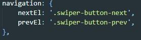В качестве элементов кнопок указываем классы элементов, для их стилизации так же в CSS обращаемся к их классам (можем отстилизовать свои классы и просто в JS ПЕРЕДАТЬ СВОИ ПАРАМЕТРЫ). Что бы отстилизовать кнопки которые идут по умолчанию, для этого обращаемся к псевдоэлементу after (скрываем его display: none и задаем стили классу кнопки)
Что бы вывести кнопки за пределы слайдера, нужно создать блок за пределом блока swiper-wrapper и туда поместить наши блоки с кнопками
slidesPerGroup - указывает сколько слайдов будет скролится за раз, по умолчанию значение 1
slideToclickedSlide - позволяет переключать слайд по клику по нему. По умолчанию имеет значение false
centeredSlides - позволяем держать в центре главный слайд, хорошо работает вместе с предыдущем свойством, при клике на соседний слайд именно он становится центральным
autoplay - позволяет прокручивать автоматом слайдер. свойство autoplay является объектом и в него мы передаем свйотсво delay со скоростью в милисекундах
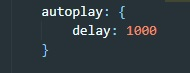Для адаптации мы слайдеру добавляем свойство breakpoints. Это свойство так же является объектом, ключами которого являются так же объекты. Указываем ширину экрана и что при этой ширине будет происходить
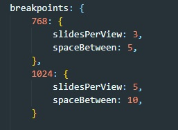для того что бы задать разную ширину для слайдов, в свойстве slidesPerView указываем не количество (цифру), а указываем слово auto. После этого в стилях свойству width слайда так же указываем значение auto
Первое что делаем это задаем еще одно свойство слайдеру - centeredSlides: true,, затем задаем стили вот такие:
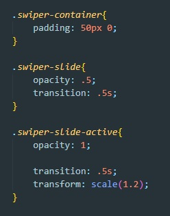контейнеру задаем падинги, иначе наш увеличенный слайд будет скрываться из за свойства overflow: hidden
К классу swiper-slide-active применяем свойство transform: scale(1.2); и что бы все это было плавно, добавляем transition
Для превью просто создаем два слайдера. И главному слайдеру в качестве свойства thumbs передаем объект который будет ссылаться на второй слайдер
Что если мы не хотим использовать названия классов которые есть по умолчанию (swiper-container, swiper-wrapper и swiper-slide)
Для этого в конфиге слайдера указываем новые классы. Рассмотрим сначала разметку html
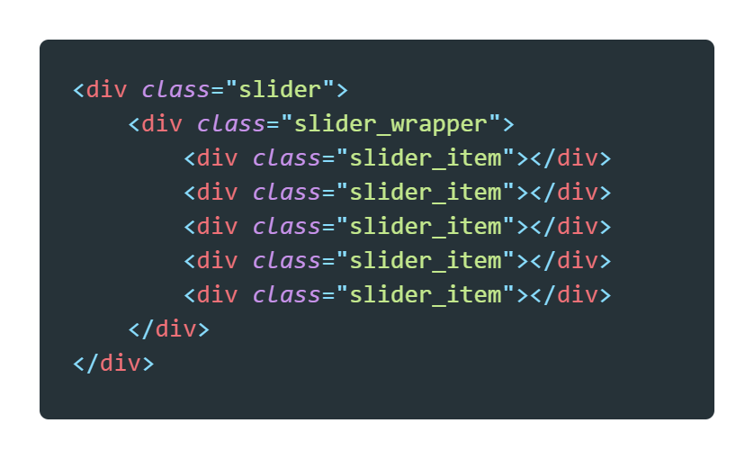Теперь в JavaScript добавим свойства нашему слайдеру
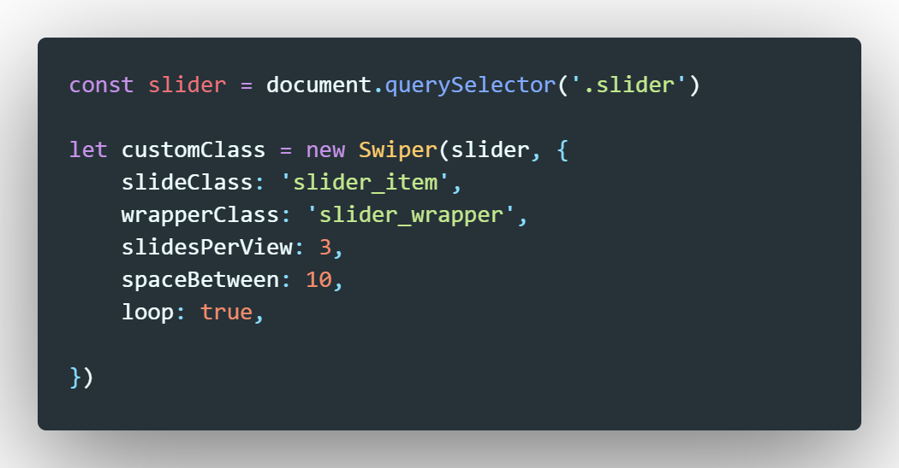Здесь ключавыми свойствами являются slideClass и wrapperClass
Теперь осталось только добавить немного стилей нашим классам, что бы слайдер заработал
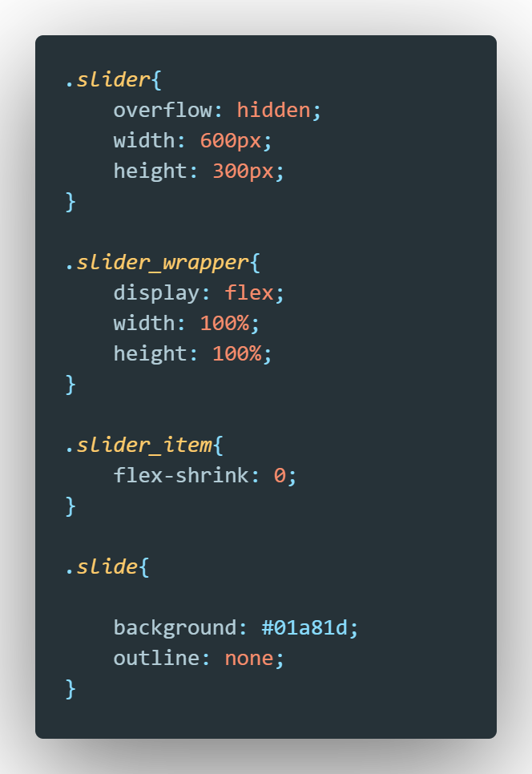Рассмотрим код HTML

Что бы обработать эти слайдеры мы создаем переменную куда помещаем массив все слайдеров. Далее проходимся по массиву методом forEach и на каждой итерации создаем новый слайдер. Стилизуем с помощью добавления дополнительных классов сонтейнеру и слайдам
код JS
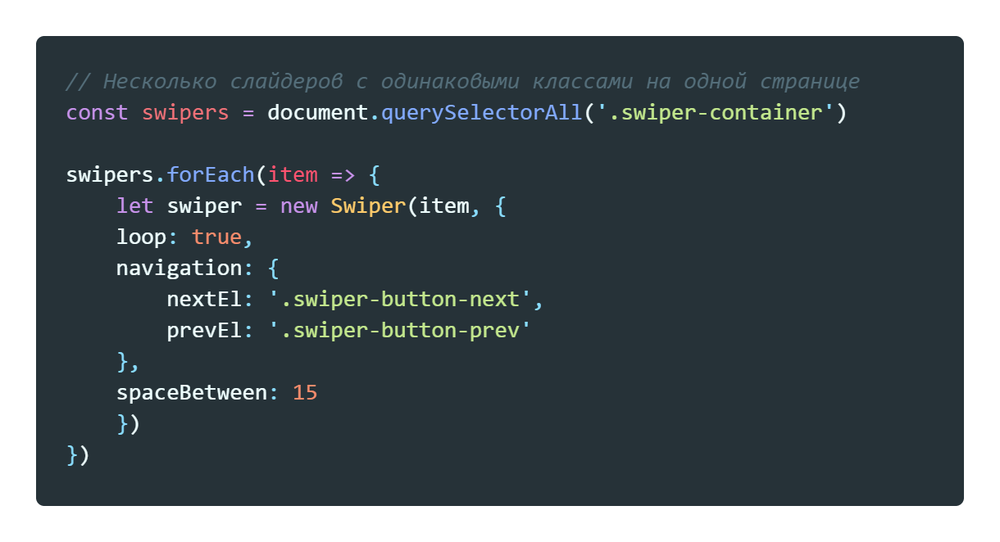Задача при уменьшении экрана до размена мобильного устройства обычная разметка превращается в слайдер
Разметка:
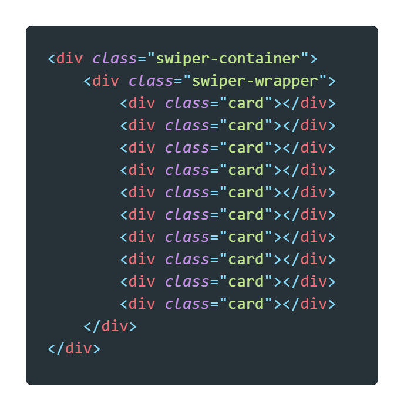Теперь добавим немного стилей
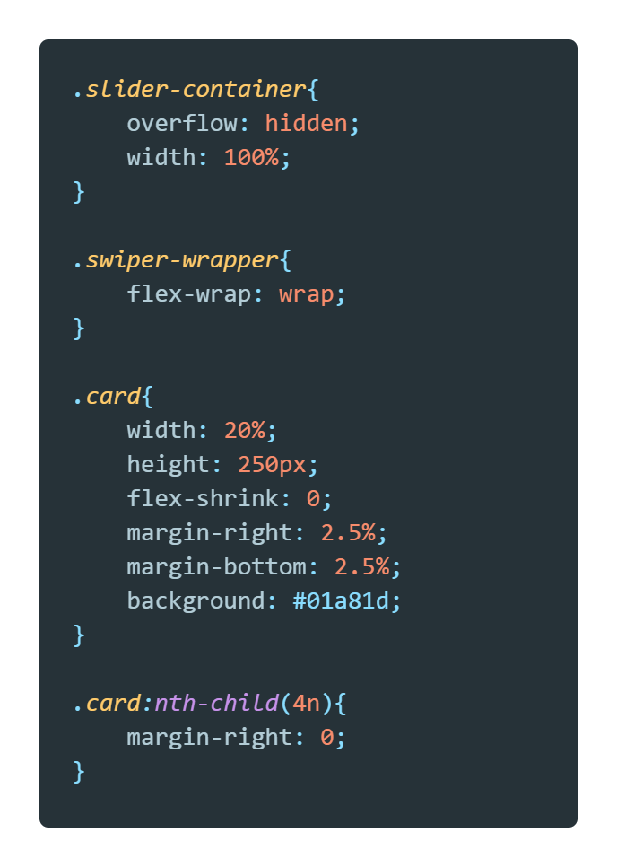Теперь создадим медиазапрос с такими параметрами:
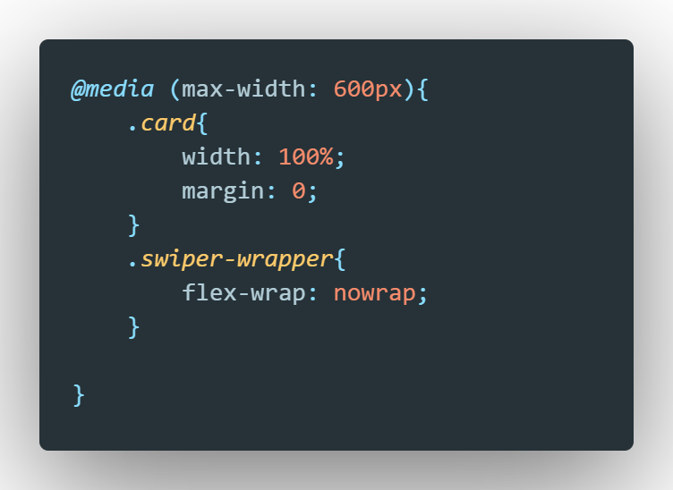Далее контейнеру зададим data атрибут
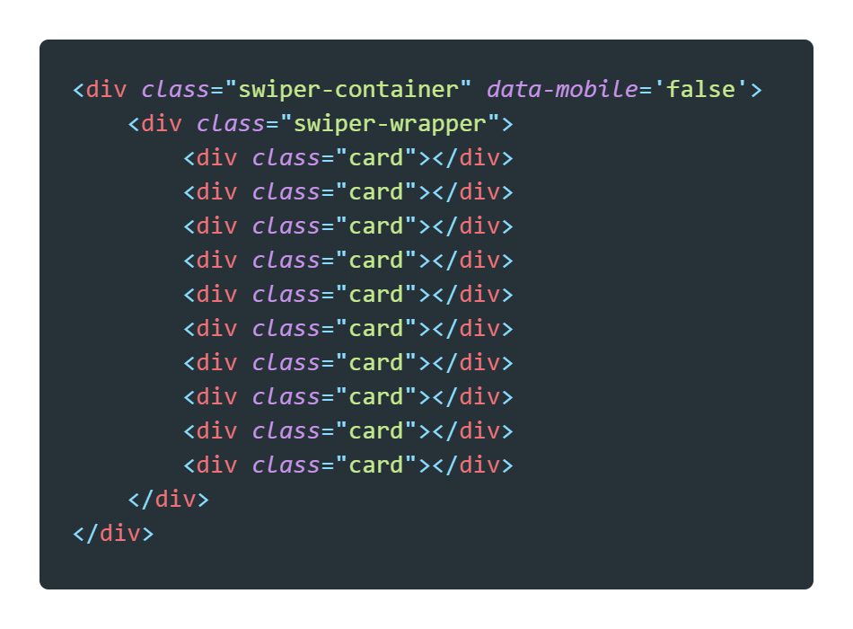Теперь приступим к JS
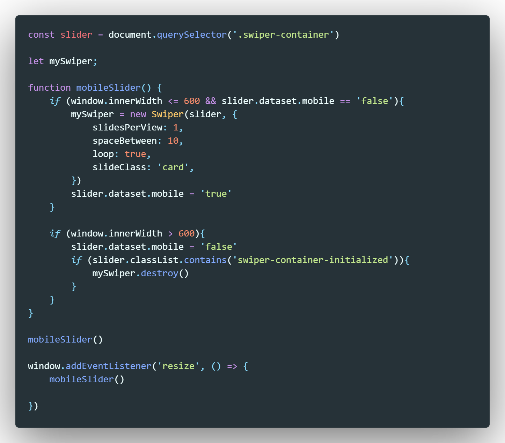